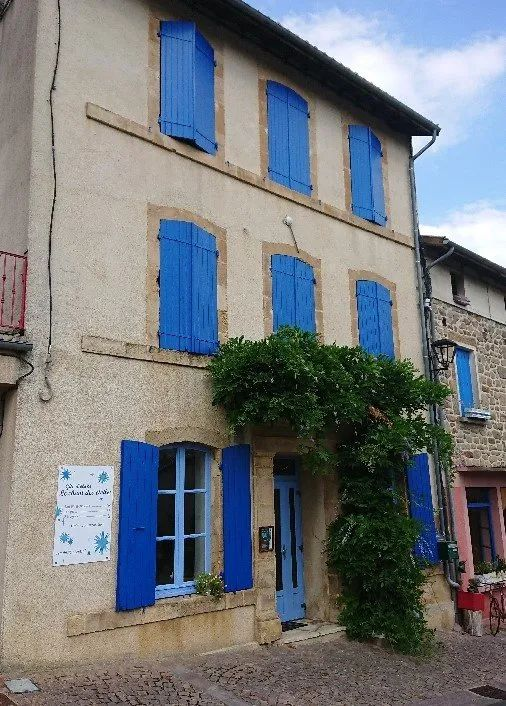
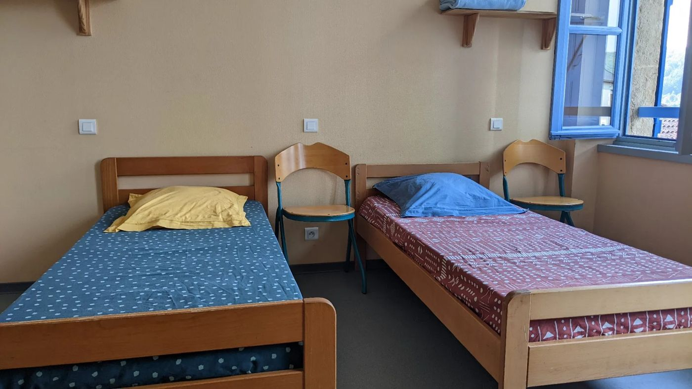
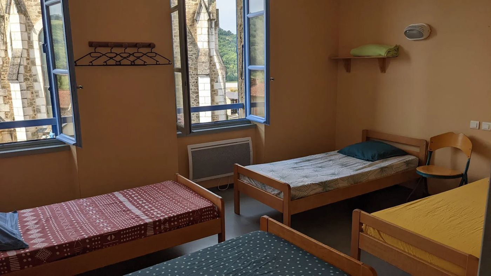
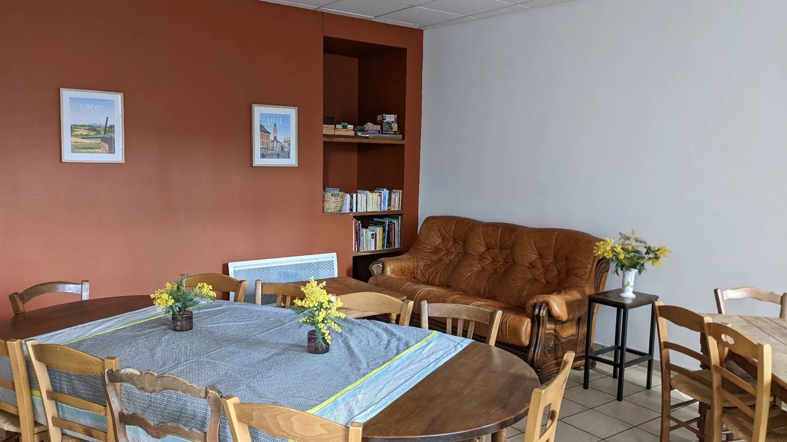
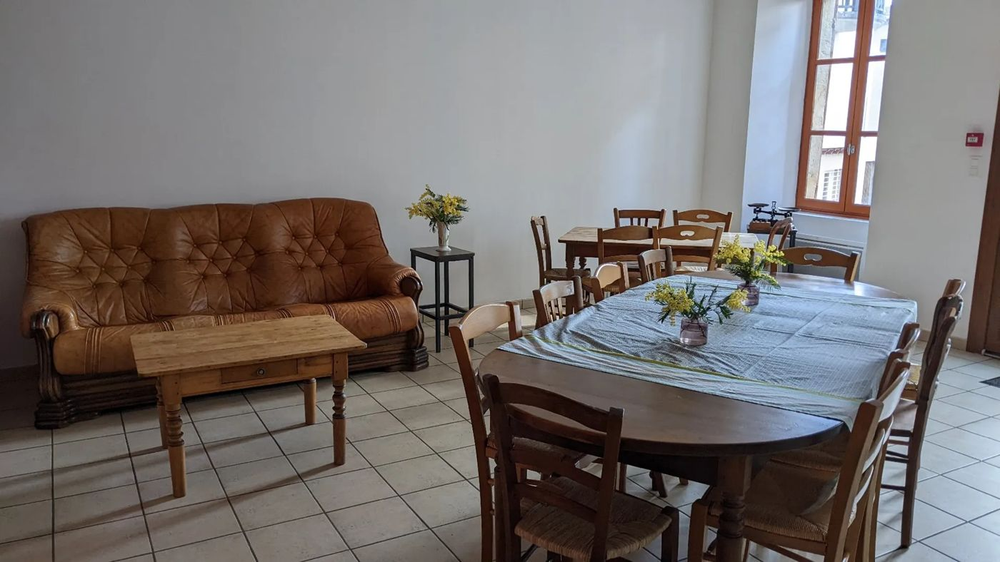
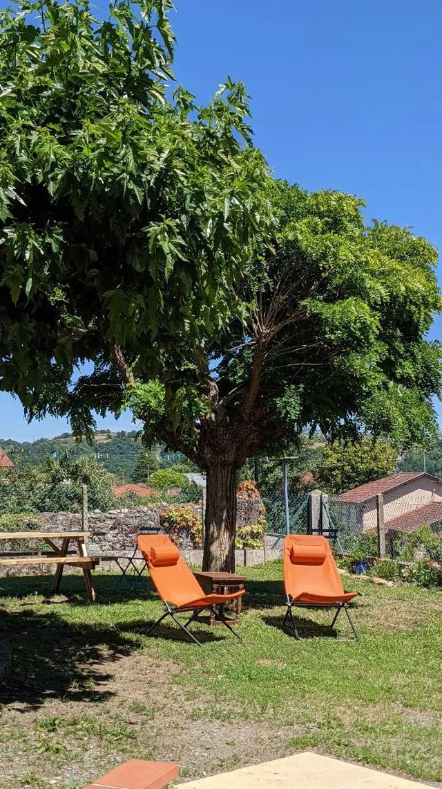
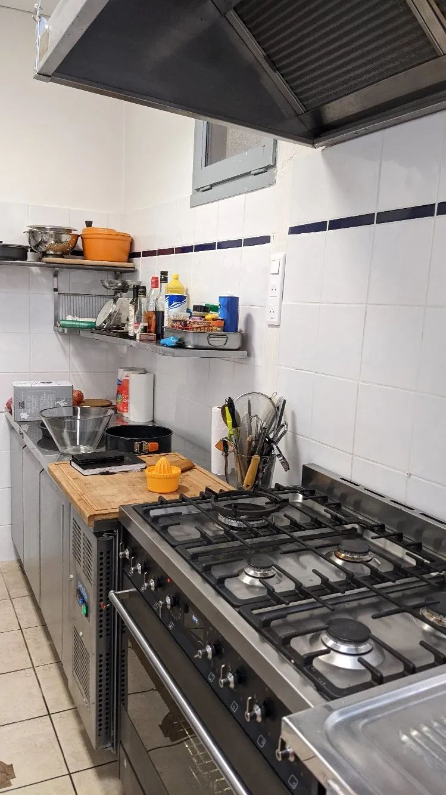
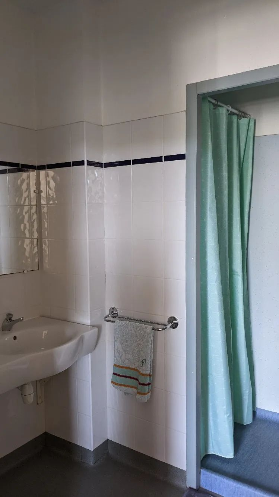

Chemin de Saint-Jacques · GR 65
Gîte Le Chant des Étoiles
Au centre de Livinhac-le-Haut, dans un méandre du Lot, une maison de village pour faire étape entre Conques et Figeac. Marcheurs, pèlerins, cyclistes, familles et groupes y sont les bienvenus.

Le gîte
Une maison de village, face à l'église
Ancien gîte communal, Le Chant des Étoiles occupe une maison de village sur trois niveaux, avec une cour face à l'église et à la place du village.
Il accueille les marcheurs d'un soir comme les familles et les groupes de randonneurs. Sur réservation, il est aussi possible d'y séjourner plusieurs jours. Le gîte entier se loue aux groupes, en gestion libre.


Équipements
Tout pour poser son sac
Après l'étape, de quoi cuisiner, laver son linge et souffler à l'ombre.
Cuisine équipée
Une cuisine commune en gestion libre, pour préparer soi-même ses repas.
Salle à manger et salon
De grandes tables et un coin salon pour se retrouver le soir.
Jardin ombragé
Un jardin avec des tables pour se détendre l'après-midi.
Lave-linge
Un espace laverie avec étendoirs pour la lessive quotidienne.
Wi-Fi gratuit
Accessible dans tout le gîte.
Commerces sur la place
Épicerie, boulangerie, boucherie et restaurant à Livinhac.

Le matin
Un petit-déjeuner complet
Pour repartir du bon pied, une formule petit-déjeuner est proposée, à réserver la veille. Pour les personnes intolérantes au gluten, des galettes de maïs remplacent le pain.
- Boissons chaudes
- Pain, beurre, confiture
- Yaourt
- Fruits
- Jus d'orange
- Céréales
Photos
Le gîte en images




Le chemin
Au pied du GR 65
Le chemin de Saint-Jacques-de-Compostelle passe au pied du gîte. Livinhac-le-Haut, au bord du Lot, est une étape idéale entre Conques et Figeac.
Réservation
Réservez votre étape
Par téléphone, par SMS ou par e-mail. Pour un groupe ou un séjour, précisez vos dates et le nombre de personnes.